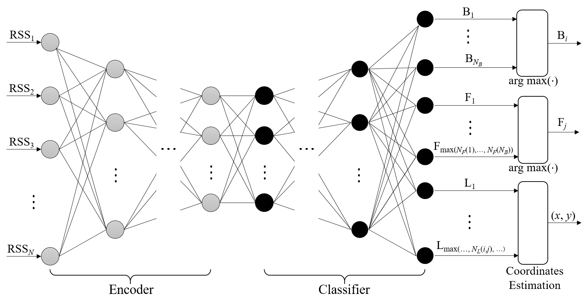
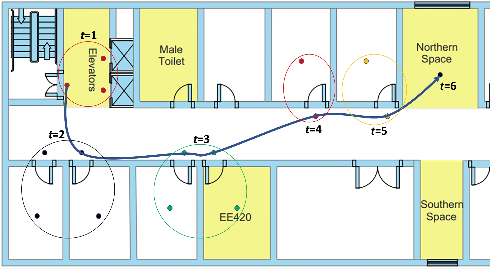

Trajectory Estimation of Mobile Users/Devices based on Wi-Fi Fingerprinting and Deep Neural Networks
Table of Contents
- Abstract
- Research questions
- People
- Grants
- Duration
- Meetings
- Outcomes
- References
- Trajectory estimation
- Recurrent neural networks (RNNs) and long short-term memory (LSTM) networks
- Convolutional neural networks (CNNs) for time series data (e.g., audio signal)
- Wi-Fi fingerprinting and deep learning
- Fingerprint datasets
- GitHub repositories for Python codes and fingerprint data
- Android programming
- Related Projects
Abstract
Where there is no GPS signal, received signal strength (RSS) from wireless network can be used for location estimation through fingerprinting; for instance, a vector of a pair of a service set identifier (SSID) and RSS for a Wi-Fi access point (AP) measured at a known location becomes its location fingerprint and a static user/device location then can be estimated by finding the closest match between its new RSS measurement and the location fingerprints in a database. This project aims at extending Wi-Fi fingerprinting technique to trajectory estimation of mobile users/devices exploiting its space/time correlations using deep neural networks (DNNs).
Research questions
We are to extend the Wi-Fi fingerprinting technique for the trajectory estimation of mobile users/devices using DNNs.
Below are key research questions in this regard:
- How to exploit the spatial and temporal correlations of a sequence of locations of a mobile user in estimating its trajectory?
- What are the impacts of the depth of dependencies (i.e., the number of past states that the current state depends on) in modelling a trajectory?
- Which one is better in modelling the spatial and temporal correlations of a trajectory, Markov models or recurrent neural networks (RNNs)?

Figure 1: A DNN architectures for scalable building/floor classification and floor-level coordinates estimation based on an SAE for the reduction of feature space dimension and a feed-forward classifier for multi-label classification [8].

Figure 2: Illustration of trajectory estimation based on the location estimates from Wi-Fi finger printing.
People
Supervisors
Research Assistant
- Xintao Huan (E-mail: Xintao.Huan_at_xjtlu.edu.cn; PhD Candidate, Department of Electrical and Electronic Engineering, XJTLU)
Participants
- Zhenghang (Klaus) Zhong (E-mail:Zhenghang.Zhong15_at_student.xjtlu.edu.cn; Year 3, Department of Electrical and Electronic Engineering, XJTLU)
- Tiancheng (Arthur) Yuan (E-mail: Tiancheng.Yuan14_at_student.xjtlu.edu.cn; 2+2, Department of Electrical Engineering & Electronics, University of Liverpool)
- Xiangxing Li (E-mail: Xiangxing.Li15_at_student.xjtlu.edu.cn; Year 3, Department of Electrical and Electronic Engineering, XJTLU)
- Zhe (Tim) Tang (E-mail: Zhe.Tang15_at_student.xjtlu.edu.cn; Year 3, Department of Electrical and Electronic Engineering, XJTLU)
- Yang Yang (E-mail: Yang.Yang15_at_student.xjtlu.edu.cn; 2+2, Department of Electrical Engineering & Electronics, University of Liverpool)
- Naomi Grant (E-mail: N.Grant17_at_student.xjtlu.edu.cn; Year 2, Department of Electrical and Electronic Engineering, XJTLU)
- Renzhi Sheng (E-mail: Renzhi.Sheng16_at_student.xjtlu.edu.cn; Year 2, Department of Electrical and Electronic Engineering, XJTLU)
- Meng (Lemon) Wei (E-mail: Meng.Wei16_at_student.xjtlu.edu.cn; Year 2, Department of Electrical and Electronic Engineering, XJTLU)
- Yuanyuan Zhang (E-mail: Yuanyuan.Zhang16_at_student.xjtlu.edu.cn; Year 2, Department of Electrical and Electronic Engineering, XJTLU)
- Chongfeng Ling (E-mail: Chongfeng.Ling17_at_student.xjtlu.edu.cn; Year 1, Department of Electrical and Electronic Engineering, XJTLU)
Grants
- Xi'an Jiaotong-Liverpool University Summer Undergraduate Research Fellowships (SURF) programme (under grant SURF-201830).
Duration
- June/2018 - August/2018 (10 weeks)
Meetings
- 28/08/2018: 11th meeting, 2-4 PM, IR515
- Pregress review and publication plans
- 21/08/2018: 10th meeting, 10-12 AM, IR515
- Discussions on SURF asbtract and poster
- 14/08/2018: 9th meeting, 2-4 PM, IR515
- Progress review
- 08/08/2018: 8th meeting, 2-4 PM, IR515
- Progress review
- 31/07/2018: 7th meeting, 2-4 PM, IR515
- Kyeong Soo (Joseph) Kim, "On Wi-Fi fingerprint datasets (including the review of "Wi-Fi crowdsourced fingerprinting dataset for indoor positioning)"
- 24/07/2018: 6th meeting, 2-4 PM, EE505
- Chongfeng Ling, Tiancheng (Arthur) Yuan, Yang Yang, and Meng (Lemon) Wei, Review of "DeepPositioning: Intelligent fusion of pervasive magnetic field and WiFi fingerprinting for smartphone indoor localization via deep learning"
- 17/07/2018: 5th meeting, 2-4 PM, EE505
- Xintao Huan, App demonstration: WiGeoLoc
- Zhe (Tim) Tang, Review of "Natural turing machines"
- Naomi Grant, Fingerprint database progress review 1
- 10/07/2018: 4th meeting, 2-4 PM, IR515
- 03/07/2018: 3rd meeting, 2-7 PM, P515
- Zhe (Tim) Tang, Python and neural network
- Yang Yang and Meng (Lemon) Wei, Review of "CNN based indoor localization using RSS time-series"
- Tiancheng (Arthur) Yuan and Renzi Sheng
- Xiangxing (Carlos) Li and Zhenghang (Klaus) Zhong, Review of "Geomagnetic field based indoor localization using recurrent neural networks"
- Naomi Grant and Chongfeng Ling, Review of "UJIIndoorLoc" and "UJIIndoorLoc-Mag" databases
- 26/06/2018: 2nd meeting, 2-4 PM, P515
- Zhenghang (Klaus) Zhong, Review of SURF 2017 - Server part
- Ruihao (Jeff) Wang, A brief introduction on DNN based methods
- 19/06/2018: Kick-off meeting, 2-4 PM, P515
- Kyeong Soo (Joseph) Kim, Review of indoor localisation based on Wi-Fi fingerprinting with deep neural networks
- 25/05/2018: Preparation meeting, 5-6 PM, IR515
Outcomes
GitHub repositories
Publications
- Zhenghang Zhong, Zhe Tang, Xiangxing Li, Tiancheng Yuan, Yang Yang, Wei Meng, Yuanyuan Zhang, Renzhi Sheng, Naomi Grant, Chongfeng Ling, Xintao Huan, Kyeong Soo Kim and Sanghyuk Lee, "XJTLUIndoorLoc: A new fingerprinting database for indoor localization and trajectory estimation based on Wi-Fi RSS and geomagnetic field," accepted for presentation at GCA'18, Sep. 27, 2018.
References
Trajectory estimation
- Ho Jun Jang, Jae Min Shin, and Lynn Choi, "Geomagnetic field based indoor localization using recurrent neural networks," Proc. GLOBECOM 2017, pp. 1-6, Dec. 2017. (DOI)
- Wei Zhang, Kan Liu, Weidong Zhang, Youmei Zhang, and Jason Gu, "Deep neural networks for wireless localization in indoor and outdoor environments," Neurocomputing, vol. 194, pp. 279-287, 2016. (DOI)
Recurrent neural networks (RNNs) and long short-term memory (LSTM) networks
- Christopher Olah, Understanding LSTM networks, Accessed May 22, 2018.
- Yuan Lukito and Antonius Rachmat Chrismanto, "Recurrent neural networks model for WiFi-based indoor positioning system," Proc. of 2017 International Conference on Smart Cities, Automation & Intelligent Computing Systems, Yogyakarta, Indonesia, Nov. 2017. (DOI)
Convolutional neural networks (CNNs) for time series data (e.g., audio signal)
- Alex Graves, Abdel-rahman Mohamed, and Geoffrey Hinton, "Speech recognition with deep recurrent neural networks," arXiv:1303.5778 [cs.NE], Mar. 2013. (arXiv)
- Grégoire Montavon, "Deep learning for spoken language identification," Proc. NIPS Workshop on Deep Learning for Speech Recognition and Related Applications, 2009.
Wi-Fi fingerprinting and deep learning
- Kyeong Soo Kim, Ruihao Wang, Zhenghang Zhong, Zikun Tan, Haowei Song, Jaehoon Cha, and Sanghyuk Lee, "Large-scale location-aware services in access: Hierarchical building/floor classification and location estimation using Wi-Fi fingerprinting based on deep neural networks," (Extended version of the FOAN 2017 paper), Fiber and Integrated Optics, vol. 37, no. 5, pp. 277-289, Apr. 27, 2018. (DOI)
- Kyeong Soo Kim, Sanghyuk Lee, and Kaizhu Huang "A scalable deep neural network architecture for multi-building and multi-floor indoor localization based on Wi-Fi fingerprinting," Big Data Analytics, vol. 3, no. 4., pp. 1017, Apr. 19, 2018. (DOI) (arXiv)
- Kyeong Soo Kim, Ruihao Wang, Zhenghang Zhong, Zikun Tan, Haowei Song, Jaehoon Cha, and Sanghyuk Lee, "Large-scale location-aware services in access: Hierarchical building/floor classification and location estimation using Wi-Fi fingerprinting based on deep neural networks," Proc. of FOAN 2017, Munich, Germany, Nov. 7, 2017. (arXiv)
- Mai Ibrahim, Marwan Torki, and Mustafa ElNainay, "CNN based indoor localization using RSS time-series," Proc. of ISCC 2018, pp. 1-6, Natal, Brazil, Jun. 2018. (ResearchGate)
- Paramvir Bahl and Venkata N. Padmanabhan, "RADAR: An In-Building RF-based User Location and Tracking System," Proc. INFOCOM 2000, pp. 1-10, 2000.
- Michal Nowicki and Jan Wietrzykowski, "Low-effort place recognition with WiFi fingerprints using deep learning," arXiv:1611.02049 [cs.RO], Apr. 2017. (arXiv)
- Keras: A high-level neural networks API, written in Python and capable of running on top of either TensorFlow or Theano; now part of TensorFlow distribution.
- Shixiong Xia, Yi Liu, Guan Yuan, Mingjun Zhu, and Zhaohui Wang, "Indoor Fingerprint Positioning Based on Wi-Fi: An Overview," ISPRS Int. J. Geo-Inf, vol. 6, no. 5, 135, pp. 1-25, 2017.
- John S. Breese, David Heckerman, and Carl Kadie, "Empirical analysis of predictive algorithms for collaborative filtering," Tech. Report, MSR-TR-98-12, Microsoft, May 1, 1998.
- CS246 Mining Massive Data Sets Winter 2017, Chapter 9. Recommendation systems, Stanford, 2017.
Fingerprint datasets
- J. Torres-Sospedra et al., "UJIIndoorLoc: A new multi-building and multi-floor database for WLAN fingerprint-based indoor localization problems," Proc. IPIN 2014, pp. 261-270, Busan, Korea, Oct. 2014. (DOI)
- J. Torres-Sospedra et al., "UJIIndoorLoc-Mag: A new database for magnetic field-based localization problems," Proc. IPIN 2015, pp. 1-10, Banff, Alberta, Canada, Oct. 2015. (DOI)
- UCI Machine Learning Repository, UJIIndoorLoc Data Set (fingerprint database for the above two papers and many others).
- E. S. Lohan et al., "Wi-Fi crowdsourced fingerprinting dataset for indoor positioning," Data, vol. 2, no. 4, article no. 32, pp. 1-16, 2017.
GitHub repositories for Python codes and fingerprint data
Android programming
- Sample apps and lecture notes: EG-M42 Software for Smartphone
- wifiScanner@github.com
- Android Studio
- Google developers for China
- Information specific to developers in China